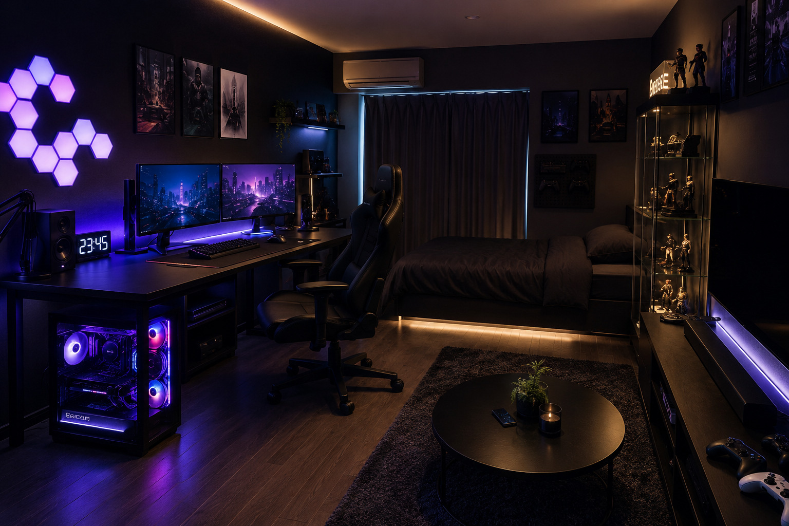
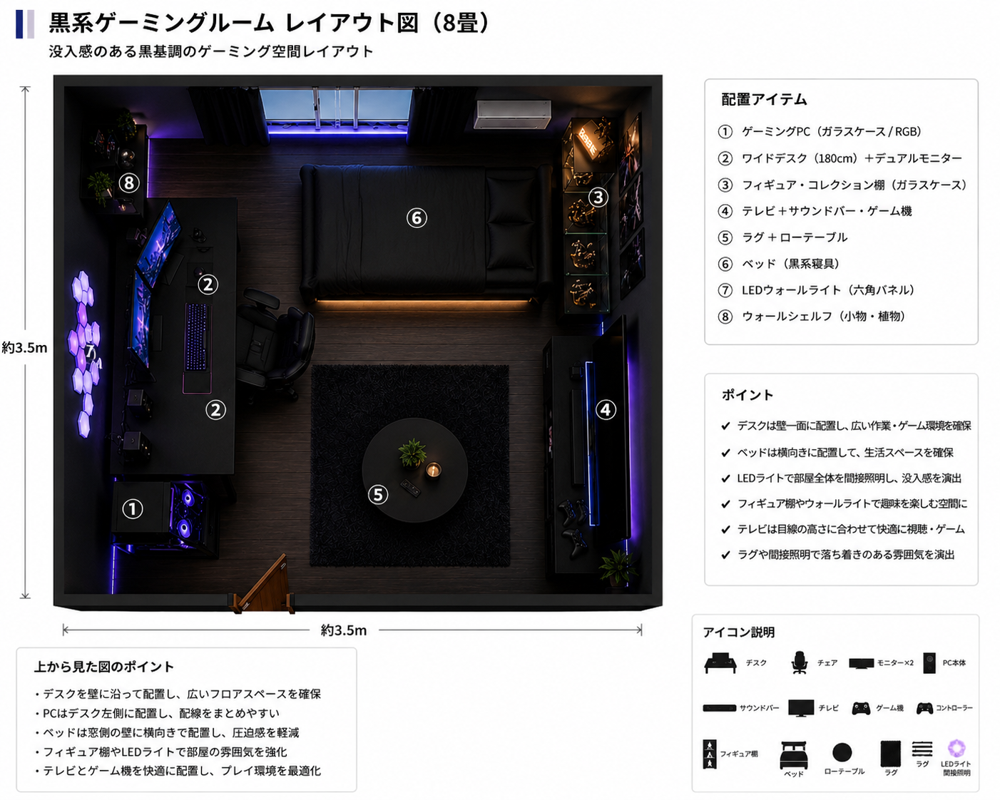

黒系ゲーミングレイアウト

概要
黒を基調としたゲーミングルームです。デスクを壁際のコーナーに配置し、RGBライティングやガラスケースのPCを取り入れることで、ゲームへの没入感を高めています。ゲームを中心に楽しみたい方や、かっこいい雰囲気の部屋を作りたい方におすすめです。
基本情報
| 部屋サイズ | 8畳 |
|---|---|
| 用途 | FPS・RPG・ゲーム全般 |
| 予算 | 約180,000円～300,000円（PC本体除く） |
| デスクサイズ | 幅180cm × 奥行80cm |
| 再現難易度 | ★★★☆☆ |
レイアウト図

必要なもの
- 幅180cmデスク
- RGBキーボード
- デスクトップPC
- ゲーミングマウス
- 大型マウスパッド
おすすめポイント
- ゲームへの没入感が高い
- RGBライティングで雰囲気を演出できる
- PCケースをインテリアとして楽しめる
初心者向けアドバイス
黒系ゲーミングルームを作るときは、最初から多くのRGBライトを導入する必要はありません。まずは黒いデスク・チェア・デュアルモニターで統一感を作り、必要に応じてLEDライトやガラスケースPCなどを追加すると、費用を抑えながら理想の雰囲気に近づけられます。